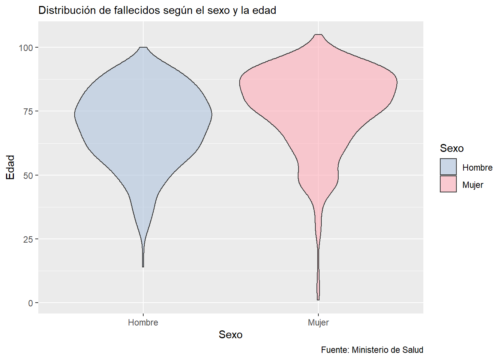

En Argentina los datos son informados diariamente por el Ministerio de Salud de la Nación. Estos datos se informan de manera desestructurada y diariamente se modifica la cantidad de datos brindados.
Los datos con los que se trabajarán son de procesamiento propio en base a los informes mencionados y se encuentran actualizados al 2020-05-14.
Situación de los casos detectados en la actualidad. Los casos Activos aquí se discriminan con los casos que se encuentran en Unidades de Terapia Intensiva
| Fecha | Casos Detectados | Fallecidos | Recuperados |
|---|---|---|---|
| 2020-03-03 | 1 | 0 | 0 |
| 2020-03-04 | 1 | 0 | 0 |
| 2020-03-05 | 2 | 0 | 0 |
| 2020-03-06 | 8 | 0 | 0 |
| 2020-03-07 | 9 | 1 | 0 |
| 2020-03-08 | 12 | 1 | 0 |
| 2020-03-09 | 17 | 1 | 0 |
| 2020-03-10 | 19 | 1 | 0 |
| 2020-03-11 | 21 | 1 | 0 |
| 2020-03-12 | 31 | 1 | 0 |
| 2020-03-13 | 34 | 2 | 0 |
| 2020-03-14 | 45 | 2 | 0 |
| 2020-03-15 | 56 | 2 | 0 |
| 2020-03-16 | 65 | 2 | 0 |
| 2020-03-17 | 78 | 2 | 0 |
| 2020-03-18 | 97 | 3 | 18 |
| 2020-03-19 | 128 | 3 | 23 |
| 2020-03-20 | 158 | 3 | 31 |
| 2020-03-21 | 225 | 4 | 27 |
| 2020-03-22 | 266 | 4 | 51 |
| 2020-03-23 | 301 | 4 | 52 |
| 2020-03-24 | 387 | 6 | 63 |
| 2020-03-25 | 503 | 8 | 72 |
| 2020-03-26 | 589 | 12 | 75 |
| 2020-03-27 | 690 | 17 | 80 |
| 2020-03-28 | 745 | 19 | 91 |
| 2020-03-29 | 820 | 20 | 228 |
| 2020-03-30 | 966 | 25 | 240 |
| 2020-03-31 | 1.054 | 28 | 248 |
| 2020-04-01 | 1.133 | 33 | 256 |
| 2020-04-02 | 1.265 | 37 | 266 |
| 2020-04-03 | 1.353 | 42 | 279 |
| 2020-04-04 | 1.451 | 43 | 280 |
| 2020-04-05 | 1.554 | 46 | 325 |
| 2020-04-06 | 1.628 | 53 | 338 |
| 2020-04-07 | 1.715 | 60 | 358 |
| 2020-04-08 | 1.795 | 65 | 365 |
| 2020-04-09 | 1.894 | 79 | 375 |
| 2020-04-10 | 1.975 | 82 | 440 |
| 2020-04-11 | 2.142 | 89 | 468 |
| 2020-04-12 | 2.208 | 95 | 515 |
| 2020-04-13 | 2.277 | 98 | 559 |
| 2020-04-14 | 2.443 | 105 | 596 |
| 2020-04-15 | 2.571 | 112 | 631 |
| 2020-04-16 | 2.669 | 122 | 666 |
| 2020-04-17 | 2.758 | 129 | 685 |
| 2020-04-18 | 2.839 | 132 | 709 |
| 2020-04-19 | 2.941 | 134 | 737 |
| 2020-04-20 | 3.031 | 142 | 840 |
| 2020-04-21 | 3.144 | 151 | 872 |
| 2020-04-22 | 3.288 | 159 | 919 |
| 2020-04-23 | 3.435 | 165 | 976 |
| 2020-04-24 | 3.607 | 176 | 1.030 |
| 2020-04-25 | 3.780 | 185 | 1.107 |
| 2020-04-26 | 3.892 | 192 | 1.140 |
| 2020-04-27 | 4.003 | 197 | 1.162 |
| 2020-04-28 | 4.127 | 207 | 1.192 |
| 2020-04-29 | 4.285 | 214 | 1.256 |
| 2020-04-30 | 4.428 | 218 | 1.292 |
| 2020-05-01 | 4.532 | 225 | 1.320 |
| 2020-05-02 | 4.681 | 237 | 1.354 |
| 2020-05-03 | 4.784 | 246 | 1.442 |
| 2020-05-04 | 4.887 | 260 | 1.472 |
| 2020-05-05 | 5.020 | 264 | 1.524 |
| 2020-05-06 | 5.208 | 273 | 1.601 |
| 2020-05-07 | 5.371 | 282 | 1.601 |
| 2020-05-08 | 5.611 | 293 | 1.728 |
| 2020-05-09 | 5.776 | 300 | 1.757 |
| 2020-05-10 | 6.034 | 305 | 1.837 |
| 2020-05-11 | 6.278 | 314 | 1.862 |
| 2020-05-12 | 6.563 | 319 | 2.266 |
| 2020-05-13 | 6.879 | 329 | 2.385 |
| 2020-05-14 | 7.134 | 353 | 2.385 |
A continuación se grafican las pirámides poblacionales de casos confirmados y fallecimientos.
La composición de la siguiente pirámide poblacional de los casos confirmados fue confeccionada considerando que el porcentaje de Hombres y Mujeres informado por el Ministerio de Salud se distribute uniformemente en cada grupo etaraio.
La notificación de los casos por jurisdicción se realiza teniendo en cuenta la residencia según el Registro Nacional de las Personas, pudiendo variar en función de la investigación de la jurisdicción. El Ministerio diariamente informa la cantidad de casos por provincia pudiendo rectificar luego cantidades de casos reasignados.
La cantidad de casos Activos se ha calculado en base a los informes provinciales de los Ministerios de Salud, considerando los casos confirmados menos los recuperados/altas menos los fallecidos- Debido a que no todas las provincias lo informan diariamente pueden existir algunas diferencias con las situaciones actuales.
| Provincia | Confirmados | Fallecidos | Recuperados |
|---|---|---|---|
| Buenos Aires | 2.411 | 150 | 793 |
| Catamarca | 0 | 0 | NA |
| Chaco | 513 | 23 | 250 |
| Chubut | 4 | 0 | 2 |
| Ciudad de Buenos Aires | 2.617 | 116 | 620 |
| Córdoba | 366 | 22 | 173 |
| Corrientes | 79 | 0 | 41 |
| Entre Ríos | 30 | 0 | 19 |
| Jujuy | 5 | 0 | 5 |
| La Pampa | 10 | 0 | 5 |
| La Rioja | 60 | 7 | 37 |
| Mendoza | 89 | 9 | 53 |
| Misiones | 25 | 1 | 10 |
| Neuquén | 115 | 4 | 56 |
| Río Negro | 298 | 13 | 207 |
| Salta | 5 | 0 | 3 |
| San Juan | 3 | 0 | 2 |
| San Luis | 11 | 0 | 10 |
| Santa Cruz | 49 | 0 | 40 |
| Santa Fe | 244 | 3 | 197 |
| Santiago del Estero | 15 | 0 | 10 |
| Tierra del Fuego | 148 | 0 | 97 |
| Tucumán | 42 | 4 | 25 |
| Formosa | 0 | 0 | NA |
Los porcentajes que representa cada provincia de casos confirmados, fallecidos y activos se muestra a continuación
A continuación se muestra la evolución de casos detectados por provincias y las curvas de casos confirmados y fallecimientos por día para cada una de las provincias argentinas. Ambas curvas se muestran a escala libre y escala logaritmica
Los días transcurridos dese que el Ministerio de Salud de Nación no reporta casos para cada una de las provincias son:
La incidencia acumulada (IA) proporciona una estimación de la probabilidad o el riesgo de que un individuo, libre de una determinada enfermedad, la desarrolle durante un período específico de tiempo.
En Argentina, considerando una población de 45.376.763 (Proyección estimada por INDEC), la tasa de incidencia acumulada nacional es de 15.73 cada 100 mil habitantes.
Al día de la fecha las incidencias acumuladas por cada 100.000 habitantes en la provincias de Argentina son:
| Provincia | Casos | Tasa Incidencia |
|---|---|---|
| Ciudad de Buenos Aires | 2.617 | 85,09 |
| Tierra del Fuego | 148 | 83,70 |
| Chaco | 513 | 42,59 |
| Río Negro | 298 | 39,86 |
| Neuquén | 115 | 17,32 |
| La Rioja | 60 | 15,25 |
| Buenos Aires | 2.411 | 13,74 |
| Santa Cruz | 49 | 13,40 |
| Córdoba | 366 | 9,73 |
| Corrientes | 79 | 7,05 |
| Santa Fe | 244 | 6,90 |
| Mendoza | 89 | 4,47 |
| La Pampa | 10 | 2,79 |
| Tucumán | 42 | 2,48 |
| Entre Ríos | 30 | 2,16 |
| San Luis | 11 | 2,16 |
| Misiones | 25 | 1,98 |
| Santiago del Estero | 15 | 1,53 |
| Chubut | 4 | 0,65 |
| Jujuy | 5 | 0,65 |
| San Juan | 3 | 0,38 |
| Salta | 5 | 0,35 |
| Catamarca | 0 | 0,00 |
| Formosa | 0 | 0,00 |
En la actualidad (2020-05-14) en Argentina, la tasa de mortalidad particular o letalidad es de 4.95%, mientras que el porcentaje pacientes recuperados es del 33.43%.
La tasa de Letalidad a nivel nacional ha evolucionado como lo muestra la siguiente gráfica.
El 59.5 % de los fallecidos son Hombres, mientras que el 40.5 % restante corresponde a Mujeres.
La edad media de los pacientes fallecidos es de 73 años, y en particular la edad media de los Hombres fallecidos es de 70 años y en la Mujeres de 78 años.
En el siguiente gráfico se observa la distribución de los pacientes fallecidos por sexo y edad.

En base a las provincias de residencia de los fallecidos, informadas por el Ministerio de Salud Nacional, y considerando las cantidades actualizadas de casos en cada provincia se obtienen las siguientes tasas de letalidad a nivel provincial
| Provincia | Muertes | Casos Acumulados | Tasa Letalidad |
|---|---|---|---|
| La Rioja | 7 | 60 | 11,7 |
| Mendoza | 9 | 89 | 10,1 |
| Tucumán | 4 | 42 | 9,5 |
| Buenos Aires | 150 | 2.411 | 6,2 |
| Córdoba | 22 | 366 | 6,0 |
| Chaco | 23 | 513 | 4,5 |
| Ciudad de Buenos Aires | 116 | 2.617 | 4,4 |
| Río Negro | 13 | 298 | 4,4 |
| Misiones | 1 | 25 | 4,0 |
| Neuquén | 4 | 115 | 3,5 |
| Santa Fe | 3 | 244 | 1,2 |
| NA | 1 | NA | NA |
En el siguiente gráfico se ilustra la relación entre la tasa de letalidad y el porcentaje de recuperados de cada provincia. El tamaño de las burbujas está dado por la cantidad de casos activos actualmente.
Los tipos de Casos confirmados se clasifican en: Importados (cuando se registra trasmisión relacionada viajes al exterior del país)
Contacto estrecho/Conglomerado: casos en los que se puede determinar la cadena de transmisión por contacto estrecho con infectados
Comunitario: aquellos casos en los que no se puede relacionar a los casos confirmados con cadenas de trasmisión conocidas.
Investigación: casos que se encuentran en estudio para definir el tipo de transmisión. En algún momento tiene que pasar a alguno de los otros 3 casos
La evolución y distribución de los casos según el tipo en Argentina es:
Desde el día 16/03/2020 el Ministerio de Salud comenzó a informar la cantidad de pruebas diagnósticas y casos descartados de COVID-19. A continuación se visualiará la evolución en la proporción de los casos detectados sobre la cantidad de pruebas analizadas, la cantidad de test realizados hasta la fecha y la proporción de la cantidad de test por millón de habitantes
A continuación se visualiará la evolución en la proporción de los casos detectados sobre la cantidad de pruebas analizadas.